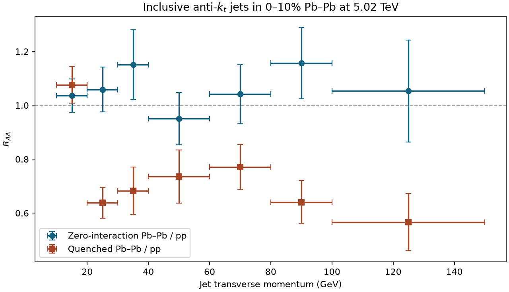

Pb–Pb at 5.02 TeV · geometry benchmark and binary-scaling closure
Both generators used Pb-208, the Pbpnrw profile with continuous nucleon placement and a 67.6 mb inelastic nucleon–nucleon cross section. Of 60,000 proposals each, 36,598 were inelastic in glauber-cpp and 36,533 in TGlauberMC.
The total inelastic Pb–Pb cross sections were 7.665 ± 0.025 b and 7.651 ± 0.025 b, respectively. The 20 centrality bins passed the four-standard-error comparison. The largest absolute overlap pull was 1.30. Errors come from a jackknife that recomputes the centrality boundaries.
| Centrality (%) | glauber-cpp b (fm) | TGlauberMC b (fm) | glauber-cpp Tₐₐ (mb⁻¹) | TGlauberMC Tₐₐ (mb⁻¹) | Tₐₐ pull |
|---|---|---|---|---|---|
| 0–5 | 3.508 ± 0.032 | 3.467 ± 0.037 | 26.023 ± 0.075 | 26.029 ± 0.088 | -0.052 |
| 5–10 | 4.959 ± 0.031 | 4.915 ± 0.041 | 20.273 ± 0.111 | 20.464 ± 0.133 | -1.098 |
| 10–15 | 6.053 ± 0.028 | 6.038 ± 0.030 | 15.947 ± 0.095 | 16.152 ± 0.126 | -1.297 |
| 15–20 | 6.966 ± 0.032 | 7.016 ± 0.037 | 12.690 ± 0.093 | 12.594 ± 0.135 | 0.585 |
| 20–25 | 7.808 ± 0.027 | 7.832 ± 0.035 | 9.876 ± 0.099 | 9.769 ± 0.092 | 0.794 |
| 25–30 | 8.535 ± 0.038 | 8.572 ± 0.044 | 7.641 ± 0.080 | 7.512 ± 0.106 | 0.973 |
| 30–35 | 9.231 ± 0.027 | 9.261 ± 0.037 | 5.814 ± 0.099 | 5.751 ± 0.085 | 0.480 |
| 35–40 | 9.880 ± 0.029 | 9.893 ± 0.025 | 4.342 ± 0.061 | 4.317 ± 0.066 | 0.278 |
| 40–45 | 10.462 ± 0.028 | 10.469 ± 0.030 | 3.188 ± 0.050 | 3.171 ± 0.055 | 0.220 |
| 45–50 | 11.042 ± 0.032 | 11.053 ± 0.023 | 2.294 ± 0.035 | 2.284 ± 0.039 | 0.201 |
| 50–55 | 11.582 ± 0.029 | 11.608 ± 0.027 | 1.598 ± 0.034 | 1.576 ± 0.026 | 0.520 |
| 55–60 | 12.095 ± 0.032 | 12.103 ± 0.025 | 1.097 ± 0.026 | 1.086 ± 0.021 | 0.348 |
| 60–65 | 12.584 ± 0.026 | 12.587 ± 0.017 | 0.749 ± 0.021 | 0.726 ± 0.015 | 0.905 |
| 65–70 | 13.053 ± 0.024 | 13.080 ± 0.021 | 0.475 ± 0.017 | 0.487 ± 0.011 | -0.595 |
| 70–75 | 13.516 ± 0.023 | 13.532 ± 0.016 | 0.299 ± 0.005 | 0.292 ± 0.008 | 0.651 |
| 75–80 | 13.955 ± 0.019 | 13.962 ± 0.017 | 0.193 ± 0.007 | 0.190 ± 0.004 | 0.381 |
| 80–85 | 14.416 ± 0.024 | 14.422 ± 0.019 | 0.120 ± 0.003 | 0.121 ± 0.003 | -0.334 |
| 85–90 | 14.936 ± 0.018 | 14.923 ± 0.012 | 0.077 ± 0.002 | 0.075 ± 0.002 | 0.655 |
| 90–95 | 15.587 ± 0.029 | 15.612 ± 0.018 | 0.049 ± 0.001 | 0.050 ± 0.001 | -0.294 |
| 95–100 | 20.000 ± 0.000 | 20.000 ± 0.000 | 0.030 ± 0.001 | 0.030 ± 0.001 | -0.010 |
The 0–10% minimum-bias class contains 3,659 Glauber rows and gives ⟨TAA⟩ = 23.147 ± 0.057 mb⁻¹ with a fixed-bin Monte Carlo error. Sampling impact parameter proportional to Ncoll gave mean b = 3.138 ± 0.020 fm in the control. The weighted expectation is 3.140 fm, compared with 3.308 fm in the minimum-bias class.
At √sNN = 5.02 TeV, the pp, zero-interaction Pb–Pb and quenched Pb–Pb samples each used 3,500 hard-event attempts with a 20–100 GeV hard-scale window and power-5 bias. Both control samples accepted all attempts. Two quenched evolutions failed, retaining their generated weights in the denominator. The jet counts in the tabulated intervals were 7,388, 7,612 and 8,999. Jet finding used hepyy FastJet with anti-kt R = 0.4 and |η| < 2.
Closure passed in all 7 eligible pT bins. The largest pull was 1.19 standard errors. At 60–80 GeV the control gave RAA = 1.042 ± 0.111. The quenched result in the same bin was 0.772 ± 0.084. The 150–250 GeV bin fell below the 50-jet threshold and is listed only in the table.
In a fresh macOS arm64 Python 3.15.2 environment, the combined pip install selected hepyy 0.2.36, hepyy-jewel-cpp 0.2.0.3 and hepyy-glauber-cpp 0.1.0. The JEWEL wheel supplied the runner and analysis scripts. Event generation and jet analysis ran without a checkout or CMake build. The analysis used hepyy-utils 0.3.0 and cppyy 3.5.0 with the macOS 15.4 SDK and Conda's zstd library.
The installed Glauber CLI generated 36,598 inelastic events from 60,000 proposals. Both the pp and 0–10% zero-interaction Pb–Pb samples accepted all 3,500 attempts and reproduced every control bin in the figure and table below. All seven eligible bins passed. The largest deviation from unity was 1.19 standard errors in 80–100 GeV. At 60–80 GeV, RAA = 1.042 ± 0.111.
The published wheel also reproduced the quenched benchmark with 3,500 attempts and 3,498 accepted events. At 60–80 GeV the quenched ratio was RAA = 0.772 ± 0.084. The earlier 300-attempt pilot gave 1.53 ± 0.47 in that bin. The notebook now uses 3,500 attempts in each of the three samples.
The jet RAA notebook runs the closure and plots the control and quenched ratios with uncertainties.
Run this in Bash from a Python environment and a directory for the outputs.
If pip resolves an older release from its cache, retry the first command with
--no-cache-dir. The README includes the macOS cppyy setup and a
300-attempt quenched pilot.
Full README example
pip install 'hepyy[hepbundle,jewel-cpp,glauber-cpp]'
pip install hepyy-utils
# Run this if cppyy is missing from your environment.
pip install 'hepyy[cppyy]'
glauber-pbpb pbpb-5020 60000 72913
glauber=pbpb-5020/events.csv
# If CT14nlo is missing, download the grid into a local PDF data directory.
mkdir -p pdfsets
curl -fL https://lhapdfsets.web.cern.ch/current/CT14nlo.tar.gz -o pdfsets/CT14nlo.tar.gz
tar -xzf pdfsets/CT14nlo.tar.gz -C pdfsets
export LHAPDF_DATA_PATH="$PWD/pdfsets${LHAPDF_DATA_PATH:+:$LHAPDF_DATA_PATH}"
runner=$(command -v jewel-run-events)
generator=$(python -c 'from hepyy_jewel_cpp.cli import NATIVE_RUNNER; print(NATIVE_RUNNER)')
analysis_tools=$(python -c 'from hepyy_jewel_cpp.cli import ANALYSIS_TOOLS; print(ANALYSIS_TOOLS)')
common=(--native-mpi --compact-hadrons --pthat-bias 5 --table-energy jewel
--longitudinal-boost on --jewel-fragmentation --ecm 5020 --pt-min 20 --pt-max 100
--lhapdf CT14nlo/0 --hard-alpha-s 0.11754434294459773 --hard-alpha-s-order 1
--isr-alpha-s 0.11754434294459773 --isr-alpha-s-order 1 --alpha-s-nfmax 5 --isr-alpha-s-cmw off)
"$runner" raa-pp.jsonl 3500 2600611 vacuum "${common[@]}"
"$runner" raa-control.jsonl 3500 2600612 zero-interaction "${common[@]}" --centrality 0 10 --glauber-events "$glauber"
python "$analysis_tools/analyze_native_events.py" raa-pp.jsonl raa-control.jsonl \
--generator "$generator" --output raa-control-jets.json
python "$analysis_tools/jet_raa.py" raa-control-jets.json \
--validate-no-quenching --output raa-closure.jsonThe closure command writes raa-closure.json and exits with an
error if the statistical gate fails.

The pp spectrum is σgen times weighted jets divided by total generated weight and bin width. Pb–Pb uses the same normalization multiplied by the minimum-bias class ⟨TAA⟩. The common overlap cancels in the model ratio. Error bars combine event-level spectrum and generator cross-section errors.
| Jet pT (GeV) | pp jets | Control jets | Quenched jets | Control Rₐₐ | Quenched Rₐₐ | Control pull |
|---|---|---|---|---|---|---|
| 10–20 | 1886 | 1932 | 4139 | 1.036 ± 0.062 | 1.076 ± 0.068 | 0.578 |
| 20–30 | 1262 | 1341 | 1284 | 1.059 ± 0.083 | 0.638 ± 0.057 | 0.708 |
| 30–40 | 985 | 1025 | 902 | 1.151 ± 0.129 | 0.682 ± 0.088 | 1.171 |
| 40–60 | 1567 | 1562 | 1430 | 0.951 ± 0.098 | 0.736 ± 0.098 | -0.507 |
| 60–80 | 1050 | 1060 | 862 | 1.042 ± 0.111 | 0.772 ± 0.084 | 0.383 |
| 80–100 | 505 | 560 | 305 | 1.157 ± 0.132 | 0.641 ± 0.081 | 1.189 |
| 100–150 | 130 | 132 | 74 | 1.053 ± 0.189 | 0.566 ± 0.106 | 0.281 |
| 150–250 | 3 | 0 | 3 | 0.000 | 1.480 ± 1.268 | — |